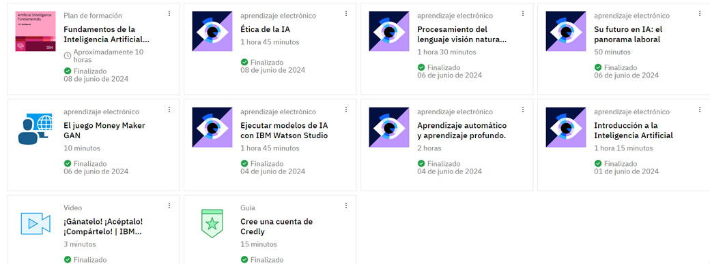
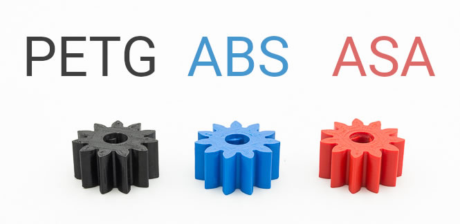

Semana 11. Clase Virtual
Seguimos avanzando con el certificado IBM

Dentro del curso se desarrollará diferentes actividades como:
Conceptos Básicos de IA: Qué es la inteligencia artificial, sus principales componentes y cómo se diferencia de otras tecnologías.
Aprendizaje Automático (Machine Learning): Introducción a los algoritmos de aprendizaje automático y cómo se utilizan para entrenar modelos de IA.
Procesamiento del Lenguaje Natural (NLP): Cómo las máquinas pueden entender e interpretar el lenguaje humano, y las aplicaciones prácticas de esta tecnología.
Visión por Computadora: Cómo los sistemas de IA pueden interpretar y comprender imágenes y videos.
Aplicaciones de IA: Ejemplos de cómo la IA se está utilizando en diferentes industrias como la salud, finanzas, y transporte.
Ética y Responsabilidad en IA: Principios y consideraciones éticas importantes en el desarrollo y uso de la IA
Semana 11. Clase Presencial

El objetivo final es asegurar que el material elegido no solo cumpla con los requisitos técnicos y estéticos, sino que también sea viable en términos de producción a mayor escala y sostenibilidad ambiental.
Primero, consideramos varios tipos de plásticos, incluyendo PLA, ABS, y PETG.
Evaluamos el PLA por su biodegradabilidad y facilidad de impresión, pero nos preocupaba su resistencia a la intemperie. El ABS, conocido por su durabilidad y resistencia al impacto, planteaba desafíos en términos de emisión de vapores tóxicos durante la impresión. El PETG ofrecía un equilibrio entre flexibilidad y resistencia, siendo además resistente a la humedad, lo que lo hacía un candidato fuerte.